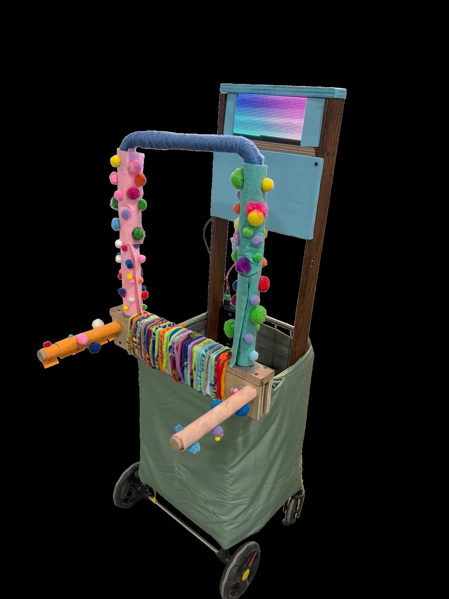
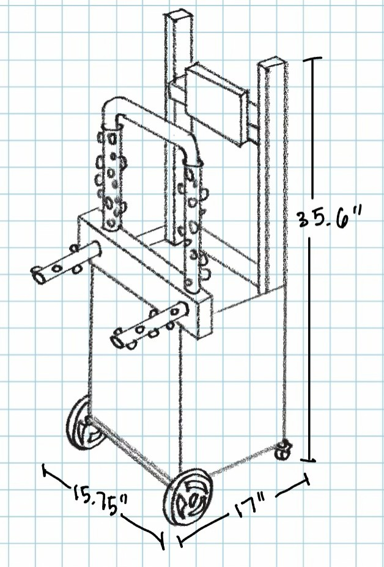
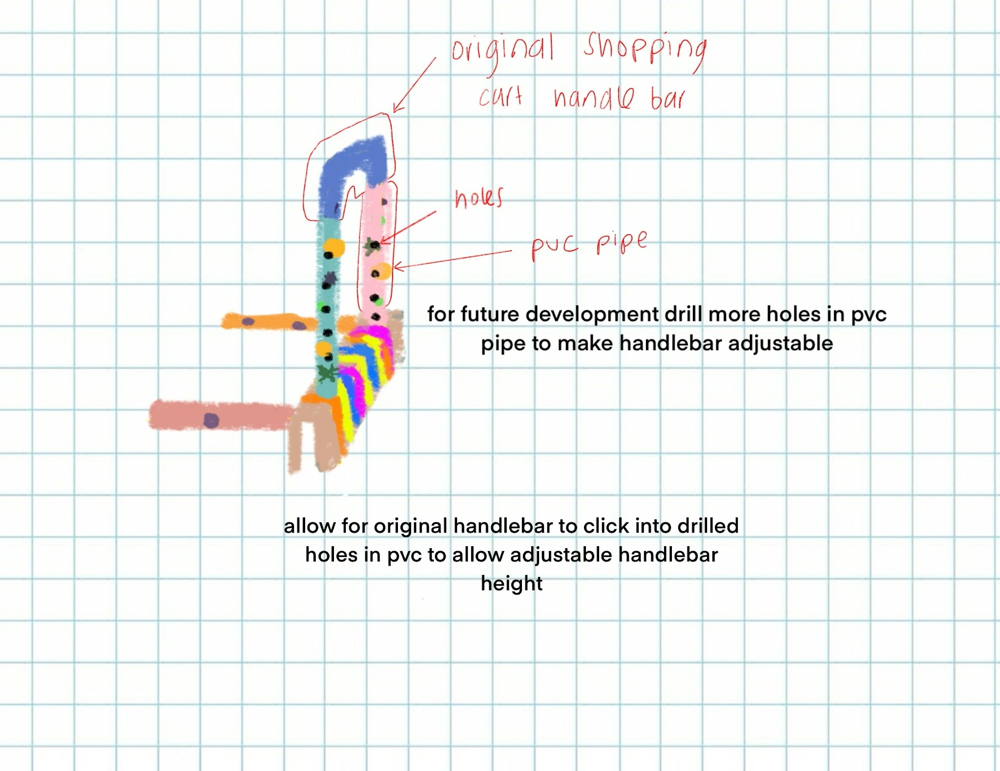
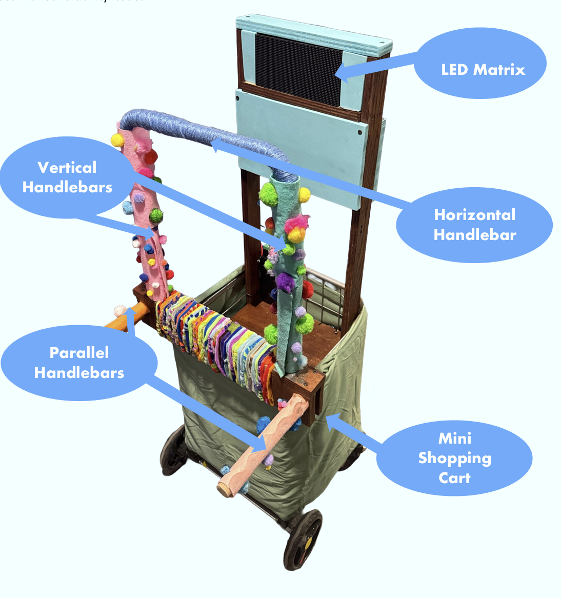

Featured project
StepBuddy

January 2026–March 2026 | Niles Township for Special Education | Design, Thinking, and Communication
StepBuddy is a modified walking aid designed to help a local student with scoliosis, Down syndrome, and limited walking mobility move around school comfortably and safely.
Overview
StepBuddy was created to address the challenge of improving walking stability through a simple, accessible device that blends supportive hardware with user-friendly feedback. The goal was to create a practical solution that feels intuitive while still being technically capable and easy to prototype.
Primary User
The primary user is a 7th-grade middle school student with Down syndrome, limited mobility, hearing, speech, eyesight, cognitive abilities, and significant scoliosis who mainly relies on the use of a wheelchair, with occasional use of a walking aid. To use the walking aid, the user relies heavily on feelings of motivation, as well as something to lean on while using his walking aid. He has previously rejected using a traditional walking aid, but willingly uses his shopping cart in the school environment.
Primary Requirements
- Must be Stable and Resist Tipping
- Must be Maneuverable in School Hallways
- Supports Natural Posture
- Allow for Sensory Engagement and Motivation
- Allow for Storage
- Must be designed to look like his current shopping cart

Design Process
Taking in the requirements above, my team and I focused on a few major areas as we designed the StepBuddy: the handlebars, an LED matrix to stimulate the user, and various sensory details covering the StepBuddy. The frame of the StepBuddy was purchased and my team and I made the necessary modifications to raise its preexisting handlebars. However, after speaking with our project partner from Niles Township District for Special Education and observing the user, we realized the user may benefit from two additional ways to grip the cart.
In our design, we crafted two additional sets of handlebars for the users' convenience and comfort. For our first set, we built handlebars that would be parallel to the ground at a height that would help the user keep his arms at a 45-degree angle, which was recommended by his Physical Therapist. The second set consisted of handlebars that are perpendicular to the ground, as another spot the user can grab onto, giving him more of a choice in what he wants to do with the cart day by day.

The user responded well to these handlebars during our observations of the user interacting with our prototype. Another problem we wanted to address was that the user needed some sort of visual stimulation and interactive features in order to feel motivated to use the cart. We decided to implement an LED matrix that introduces a visual element with different colors, patterns, and designs to keep the user engaged while walking. The matrix is positioned at the user's eye level to discourage looking down and encourage the user to keep his head up and maintain better posture while walking. This is especially beneficial for his health in the long run, as the user suffers from scoliosis and experiences difficulty maintaining his head position naturally. We hoped that this visual stimulation would help him improve his posture over time.

Key Features
- 3 handlebar types
- Sensory stimulation on cart
- LED matrix
- Storage compartment

Results
In March of 2026, my team and I presented the StepBuddy at the Northwestern Engineering Design Expo. We presented to our project partner at Niles Township for Special Education and to other professors, students, and staff who attended the expo. Following this presentation, the StepBuddy was delivered to the user so that it may begin to help the user in their day-to-day life.